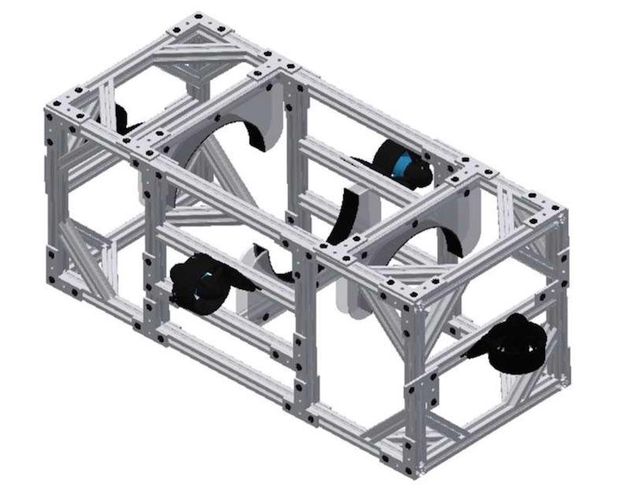

The overall structure of the Ula consists of 4 parts: The hull, outer frame, outer electronics housing, and the thrusters.
The outer frame is fabricated from 80/20 extruded 6061 aluminum for an adjustable, modular design.
The tube is suspended using acrylic arches bordered with rubber that are attached to the frame and epoxied to the tube.
The Ula utilizes four Blue Robotics T-200 brushless thrusters.
Three degrees of freedom are provides with the placement of two forwards-facing and two upwards facing thrusters.

The hull is made from an 8” polycarbonate tube sealed by custom-made aluminum endcaps.
One endcap is permanently sealed onto the tube by Loctite marine grade epoxy.
The other end of the hull is sealed by a collar and a removable acrylic plate held in place by 10 bolts.
The acrylic plate contains epoxied BlueRobotics cable penetrators to allow for the passage of cables in and out of the hull.
The inside of the hull is composed of circular frames, electronics racks, and the electrical components themselves.
Four circular frames support two electronic racks.
The upper rack consists of 0.25” and 0.50” holes while the lower rack consists of only 0.25” holes to allow for components to be zip-tied onto the tray.
The upper rack features larger holes and a spatial gap to allow for wires to pass between the two racks.